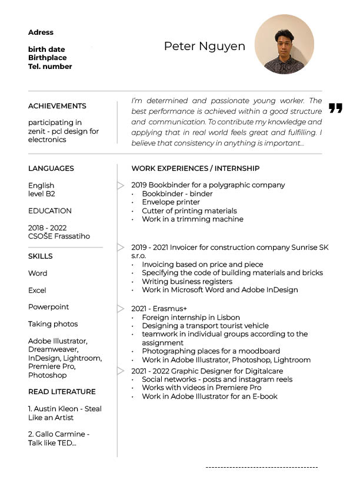

Peter's resume
Preview of my CV and experiences

Education
I studied in trade school specialized in
- Graphic Design and Digital Media
- I have developed my skills both practical and theoretical in
graphic design, including adobe softwares such as
- Adobe Photoshop
- Adobe Illustrator
- Adobe InDesign
- I also studied the fundamentals of marketing and web design
My hobbies
My contact